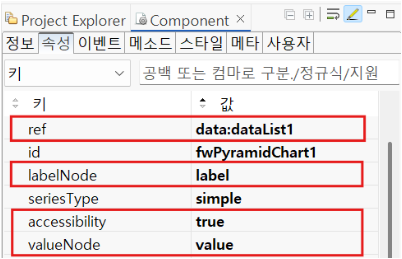
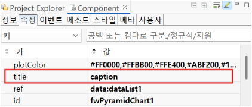
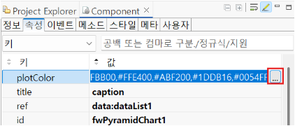
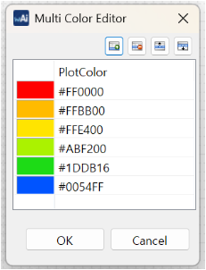
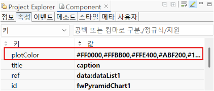

FusionChart의 종류 중 하나인 FwPyramidChart의 기본 사용 예제입니다.
삼각형 피라미드 형태로 데이터의 계층관계를 표현합니다.
dataList structure 은 차트에 연결된 데이터리스트의 구조입니다.데이터를 pyramidChart로 표현
차트 제목 달기
차트 plot 색상 적용하기
다음은 FwPyramidChart 컴포넌트의 관련 속성입니다.
[필수] ref="dataList ID"
차트와 연결할 데이터리스트를 설정합니다.
[선택] accessibility
웹접근성 지원 여부를 설정합니다. (true, false)
[선택] labelNode="Column ID"
차트에서 label로 사용할 컬럼으로, 설정하지 않으면 첫번째 컬럼으로 자동 세팅 됩니다.
[선택] valueNode
차트에서 value로 사용할 컬럼으로, 설정하지 않으면 dataType이 number인 컬럼으로 자동 세팅 됩니다.
Image 1.웹스퀘어 스튜디오의 Component View - 속성 설정 예시

[필수] title="값"
차트의 제목을 설정합니다.
Image 2.웹스퀘어 스튜디오의 Component View - 속성 설정 예시

[필수] plotColor="색상코드"
dataplot의 색상을 설정합니다.
Image 3.웹스퀘어 스튜디오의 Component View - 속성 설정 예시

Image 4.웹스퀘어 스튜디오의 Component View - 속성 설정 예시

Image 5.웹스퀘어 스튜디오의 Component View - 속성 설정 예시

Example 1.Source
<w2:fwPyramidChart accessibility="true" id="fwPyramidChart1" labelNode="label" ref="data:dataList1" seriesColumns="" seriesNode="" seriesType="simple" style="width: 300px;height: 250px;" title="caption" valueNode="value" plotColor="#FF0000,#FFBB00,#FFE400,#ABF200,#1DDB16,#0054FF"> </w2:fwPyramidChart>
labelNode
valueNode
title
plotColor